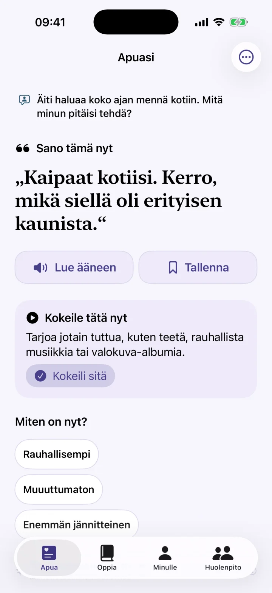
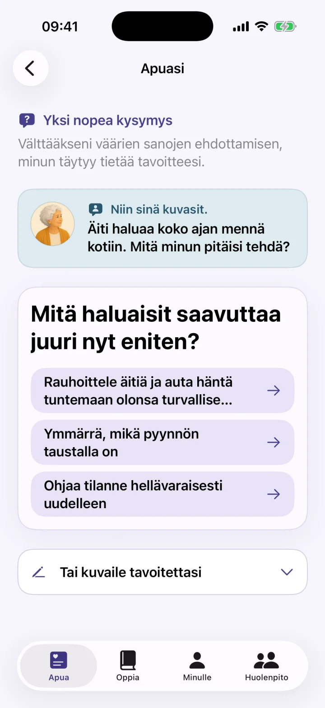
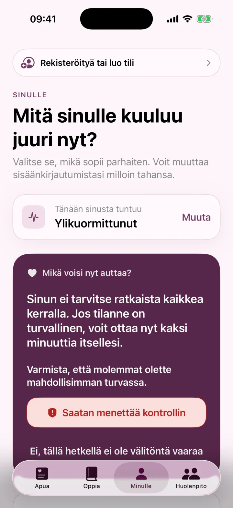

Välitöntä apua, kun sanat puuttuvat
Kun et tiedä mitä sanoa, saat rauhallisen lauseen, pienen seuraavan askeleen ja selkeää tukea vaikeisiin muistisairauden hetkiin.
- Ei korvaa lääketieteellistä neuvontaa tai paikallisia hätäpalveluita.

Välitön apu
Oppia
Itsehoito
Välitöntä apua ja henkilökohtainen 7 päivän suunnitelma vaikeiden dementiahetkien varalle.
Kun et tiedä mitä sanoa, saat rauhallisen lauseen, pienen seuraavan askeleen ja selkeää tukea vaikeisiin muistisairauden hetkiin.



Lauseita ja seuraavat askeleet
Dementia Coach tukee läheisiä, jotka huolehtivat muistisairautta sairastavasta henkilöstä. Kuvaile tilanne lyhyesti ja saat mahdollisen rauhallisen lauseen, pienen seuraavan askeleen ja selkeän selityksen.
- Nopeaa apua kuormittaviin tilanteisiin
- Tavallisia hetkiä, kuten toistuvat kysymykset, iltalevottomuus tai henkilökohtainen hoiva
- Lyhyitä oppitunteja ja henkilökohtainen 7 päivän suunnitelma
- Tallennetut lauseet, puhesyöttö ja ääneenluku
- Lyhyt omaishoitajan kuulumisten tarkistus
Ei korvaa lääketieteellistä neuvontaa tai paikallisia hätäpalveluita.
Dementia Coach on viestinnän ja arjen tuen väline. Se ei tee diagnooseja eikä korvaa lääketieteellistä, hoitotyön, psykologista tai hätätilanteen apua. AI-ehdotukset ja valmisteltu sisältö voivat olla puutteellisia tai sopimattomia. Arvioi ne aina henkilön, tilanteen ja ammattilaisten ohjeiden perusteella.
Lauseita ja seuraavat askeleet
Viestinnän tuki dementiapotilaiden omaishoitajille.